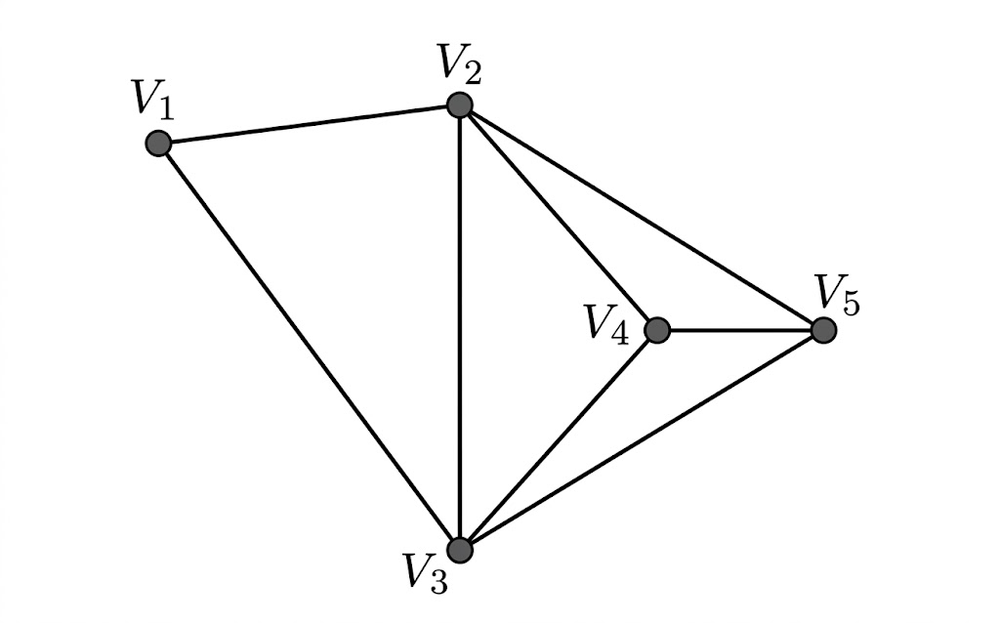

B.Tech. IV Semester
Examination, November 2023
Grading System (GS)
Max Marks: 70 | Time: 3 Hours
Note:
i) Answer any five questions.
ii) All questions carry equal marks.
a) Prove that:
i) $A - (B \cap C) = (A - B) \cup (A - C)$
ii) $A \times (B \cap C) = (A \times B) \cap (A \times C)$ (Unit 1)
b) With the help of Venn-diagram, prove that
$(A \cup B)' = A' \cap B'$ and $(A \cap B)' = A' \cup B'$ (Unit 1)
a) Consider the set Z of integers m > 1. We say that $x$ is congruent to $y$ modulo $m$ written as $x \equiv y \pmod m$
If $x - y$ is divisible by $m$. Show that this defines an equivalence relation on Z. (Unit 1)
b) Let $D_m$ denotes the positive divisors of $m$ ordered by divisibility. Draw the Hasse diagrams of the following:
i) $D_{15}$
ii) $D_{24}$ (Unit 1)
a) Consider the set Q of rational numbers and let * be the operation on Q defined by:
$a * b = a + b - ab$
i) Is (Q, *) a semi-group. Is it commutative.
ii) Find the identity element for *.
iii) Do any elements in Q have inverse? What is it? (Unit 2)
b) Define Ring with example. Also explain Commutative ring and ring homomorphism. (Unit 2)
a) Solve the following recurrence relations
$a_n = 3a_{n-1} - 3a_{n-2} + a_{n-3}, a_0 = 0, a_3 = 3, a_5 = 10$ (Unit 2)
b) Show that
$((p \lor q) \land \sim(\sim p \land (\sim q \lor \sim r))) \lor (\sim p \land \sim q) \lor (\sim p \land \sim r) \equiv \text{T}$
is a tautology by laws of algebra of propositions. (Unit 3)
a) Obtain the conjunctive normal form of
i) $p \land (p \Rightarrow q)$
ii) $\sim p \Rightarrow [r \land (p \Rightarrow q)]$ (Unit 3)
b) Check for Euler and Hamiltonian graphs:

(Unit 3)
a) What is coloring problem? Hence define coloring of graph. (Unit 3)
b) Solve the simultaneous equations:
$25x + 15y - 5z = 35$
$15x + 18y + 0.z = 33$
$-5x + 0.y + 11z = 6$
Using Cholesky Decomposition. (Unit 4)
a) What is null hypothesis? What is its significance in statistical variance? (Unit 5)
b) An agricultural research organization wants to study the effect of four types of fertilizers on the yield of crop. It divided the entire field into 24 plots of land and used fertilizer at random in 6 plots of land. Part of calculations are given below:
| Source of Variation | Sum of Squares | Degree of freedom | Mean Squares | Test Statistic |
|---|---|---|---|---|
| fertilizers | 2940 | 3 | - | 5.99 |
| Within groups | - | - | - | |
| Total | 6212 |
i) Fill in the blanks in the ANOVA table.
ii) Test at $\alpha = 0.5$, whether the fertilizers differ significantly. (Unit 5)
a) A coin was tossed 400 times and the head turned up 216 times. Test the hypothesis that the coin is unbiased. (Unit 5)
b) Find the singular value decomposition of the matrix:
$$A = \begin{bmatrix} -4 & -7 \\ 1 & 4 \end{bmatrix}$$ (Unit 4)